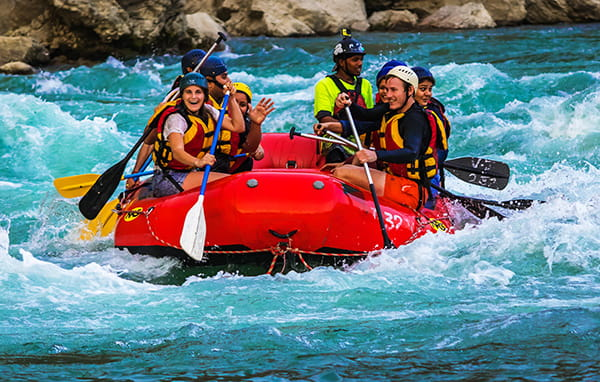

Los Dientes del Diablo
Advanced Class IV-V
Designed for adrenaline thrill-seekers, this trip tackles intense Class IV and V rapids through steep rock canyons. Guided by senior river experts, you will navigate demanding channels and extreme drops.
Ready to experience the thrill of the river? Choose your excursion below or contact us to customize a private group adventure!
Contact Us to Book
Advanced Class IV-V
Designed for adrenaline thrill-seekers, this trip tackles intense Class IV and V rapids through steep rock canyons. Guided by senior river experts, you will navigate demanding channels and extreme drops.

Intermediate Class III-IV
Our most popular all-day excursion! Enjoy six continuous hours on the water featuring thrilling Class III and IV rapids, a riverside buffet lunch, and scenic wilderness views.

Beginner / Family Class I-II
A calm and refreshing adventure perfect for families, young children, and nature photographers. Enjoy gentle currents, limestone cliffs, and frequent wildlife sightings.
| Trip Name | Difficulty | Duration | Min Age | Price |
|---|---|---|---|---|
| Los Dientes del Diablo | Class IV - V | Full Day (7 hrs) | 16+ | $145 / person |
| Full Day River Run | Class III - IV | Full Day (6 hrs) | 12+ | $115 / person |
| Half Day Adventure | Class II - III | Half Day (3 hrs) | 8+ | $75 / person |
| Scenic Canyon Float | Class I - II | Half Day (2.5 hrs) | 5+ | $55 / person |